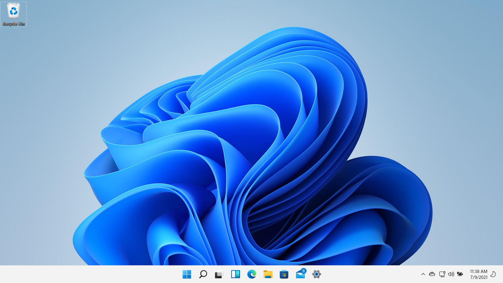
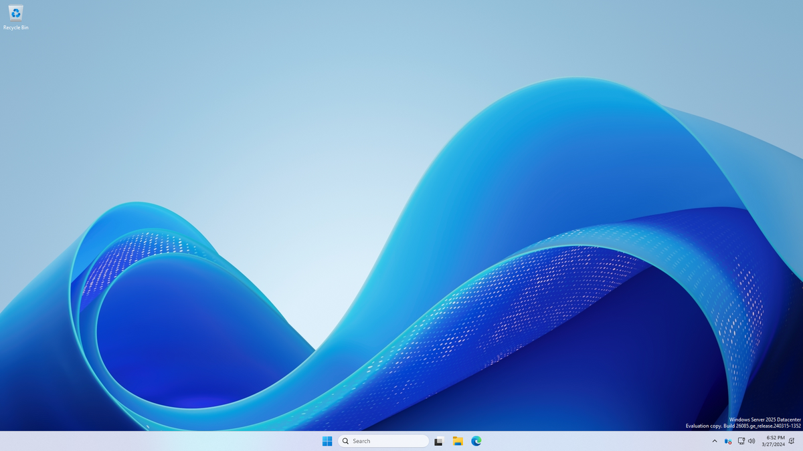

Windows 11 was released in 2021 and was another massive overhaul to the OS. A new UI was introduced, with a centered Start menu and taskbar, rounded corners, and new animations.
It was leaked early on and was met with mixed reviews. Some users loved the new look and features, while others criticized it for being too big of a departure from Windows 10.
The OS was also criticized for its hardware requirements, which were much higher than Windows 10; Losing 32-Bit support and requiring TPM 2.0. However despite this, Windows 11 has been well received after release, as it has been consistently receiving updates.
Some users have however criticized the OS for its increasing reliance on the updates and is seen as a storage hog. Windows 11 introduced Snap layouts for easier desktop arrangement, and DirectX 12 Ultimate for better gaming performance.
The OS also reintroduced Widgets, which display personalized news, weather, and other information;
its heavily disliked however as its seen as a waste of space, and contains many unwanted ads. While its not perfect, Windows 11 seems to be a step in the right direction for Microsoft.
Windows Server 2025 Now Where? Server Edition

Windows 8 was released in 2012 and was a major departure from the traditional Windows interface.
It was designed to be more touch-friendly and was optimized for tablets and other touch devices.
The Start menu was replaced with the Start screen, which featured live tiles that displayed real-time information.
The addition of the Microsoft Store allowed users to download apps and games directly to their devices using a trusted platform.
The OS also forced Secure Boot which the Linux community was not happy about, as it locked the PC from other OS's bring used.
While it wasn't majorly buggy or had any horrible issues, Desktop users were not happy with the changes, especially the lack of a Start menu.
Windows 8.1 was brought to address these issues in 2013, however it didn't help Microsoft as the majority of users stayed with Windows 7.
Windows Server 2012 was released alongside Windows 8 and was designed to be more cloud-friendly and included new features like Storage Spaces and Hyper-V 3.0.
Server 2012 was much more well received than its twin sister OS, Windows 8.